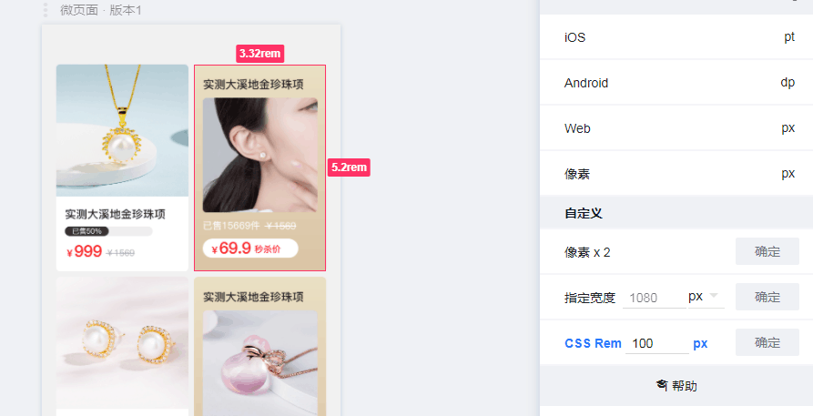

前言
虽然知道css3中新增了很多计量单位，但是平常写代码时基本不太注重css之类的东西以至于都不晓得有vh,vw这种黑科技，这几天看视频教程时刚好遇到了，记录一下，方便以后使用。
1、宽高的计量单位
| 单位 |
含义 |
| vw |
相对于视口的宽度。视口被均分为100单位的vw |
| vh |
相对于视口的高度。视口被均分为100单位的vh |
1.1 使用场景
1.1.1不借助js的情况下实现word文档效果
核心代码
1
2
3
4
5
6
7
8
9
10
| .page {
display: block;
height: 98vh;
width: 70vh;
margin: 1vh auto;
border: 1px solid #646464;
box-shadow: 0 0 15px rgba(0, 0, 0, .75);
box-sizing: border-box;
background-color: white;
}
|
来看demo
2、css3原生变量var
CSS中原生的变量定义语法是：--*，变量使用语法是：var(--*)，其中*表示我们的变量名称。
2.1 使用场景
2.1.1 改变主题色
核心代码
1
2
3
4
5
6
7
| :root {
--theme-color: #369;
}
h1 {
color: var(--theme-color);
}
|
戳这里看demo
2.1.2 改变字号
核心代码
1
2
3
4
5
6
7
8
9
10
11
| :root {
--fontSize: 20px;
}
const docStyle = document.documentElement.style;
docStyle.setProperty('--fontSize', '13px');
const body = document.querySelector('body')
var cssVarColor = getComputedStyle(body).getPropertyValue('--fontSize');
console.log(cssVarColor)
|
戳这里看demo
3、em和rem
这两个css3新增的单位其实我很早就知道了，不过一直很懒，也没机会用到直到最近(2020年10月29日)写移动端h5才开始接触。
| 单位 |
区别 |
| em |
em具体数值取决于父元素，如父元素为16px，则子元素2em为2*16即32px |
| rem |
rem具体数值取决于根元素即html，如根元素16px，不管父级为多少px，当前元素始终为rem数值*16px |
有这样一个demo
1
2
3
4
5
6
7
8
9
10
11
12
13
14
15
16
17
18
19
20
21
22
23
24
|
html {
font-size: 32px;
}
.div1,
.div2 {
font-size: 10px;
}
.div1 p {
font-size: 2em;
}
.div2 p {
font-size: 0.5rem;
}
<div class="div1">
<p>我是em</p>
</div>
<div class="div2">
<p>我是rem</p>
</div>
|
pps:在写移动端时，如果设计稿是按照iPhone6的尺寸即宽度750px来作图的，可以直接将根元素设置为100px，这样即可以直接用量出来的尺寸写css了。如果没用蓝湖等工具，也可以直接自己转换，如设计稿上font-size是28px，代码里可以直接写font-size:0.28rem。

右边金色的元素宽高就可以写3.32rem和5.2rem
为了实现自适应各种屏幕，还需要如下js
1
2
3
4
5
6
7
8
9
10
11
12
13
14
15
16
17
| (function (doc, win) {
var docEl = doc.documentElement
var resizeEvt = 'orientationchange' in window ? 'orientationchange' : 'resize'
var recalc = function () {
var clientWidth = docEl.clientWidth
if (!clientWidth) return
docEl.style.fontSize = 100 * (clientWidth / 750) + 'px'
}
if (!doc.addEventListener) return
win.addEventListener(resizeEvt, recalc, false)
doc.addEventListener('DOMContentLoaded', recalc, false)
})(document, window)
|